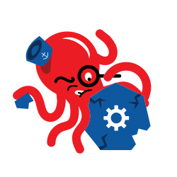
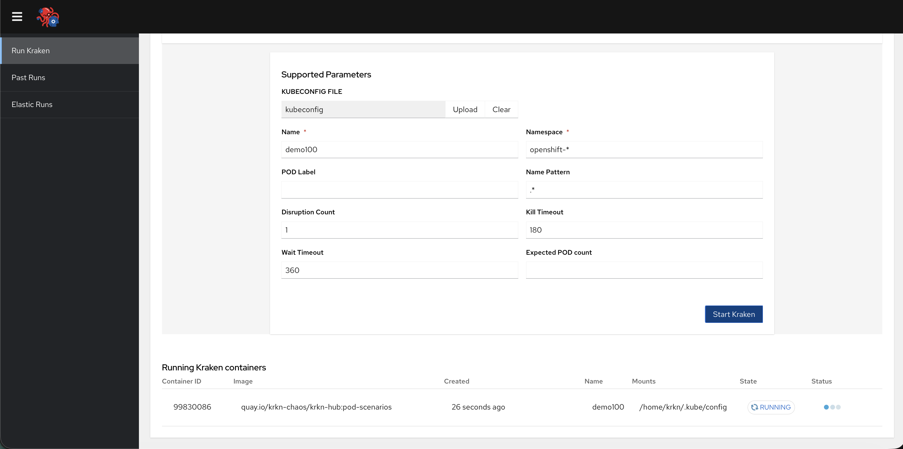

Deliberately inject failures in controlled conditions to validate resilience before incidents do.

Chaos Engineering for Kubernetes
An open-source framework for injecting controlled chaos into Kubernetes and OpenShift clusters — validating resilience through SLOs and producing actionable resiliency scores.
Every chaos scenario packaged as a ready-to-run container image, configurable entirely through environment variables.
Uses evolutionary algorithms guided by your SLOs and Prometheus metrics to automatically discover and rank the most impactful chaos experiments for your cluster.
A developer-friendly CLI that wraps krkn-hub scenarios — providing auto-completion, validation, and structured output without touching containers directly.
A Kubernetes Operator that orchestrates chaos via Custom Resource Definitions — cloud-native, declarative, and designed for multi-cluster environments.
A browser-based UI sitting on top of krkn-hub — run scenarios, watch live output, and replay or compare past experiments without touching the CLI.

A conversational CLI assistant that wraps krknctl — guiding you through scenario selection, configuration and execution through natural language interaction.
Run controlled chaos experiments and harden your Kubernetes cluster before incidents reveal its weaknesses.